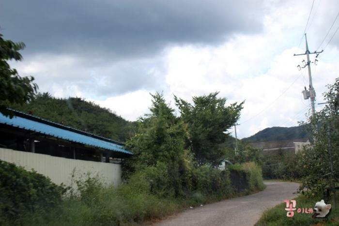
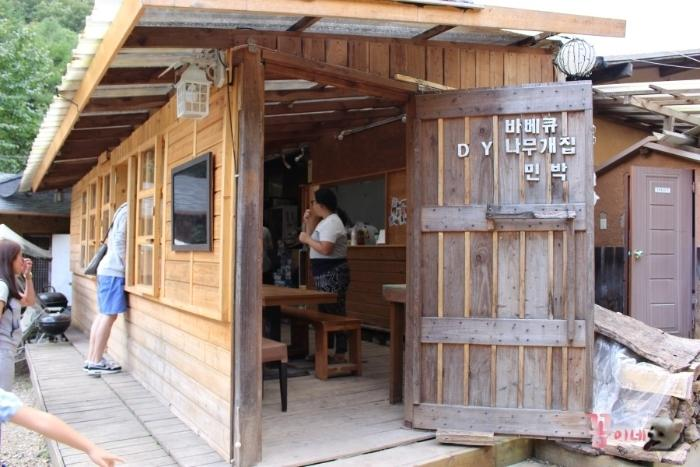
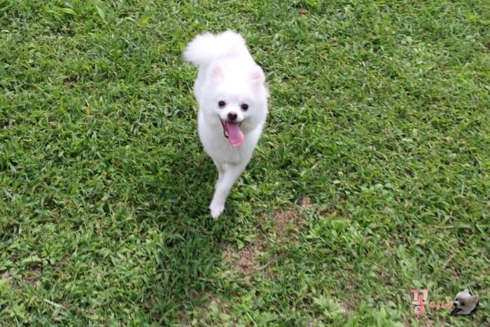
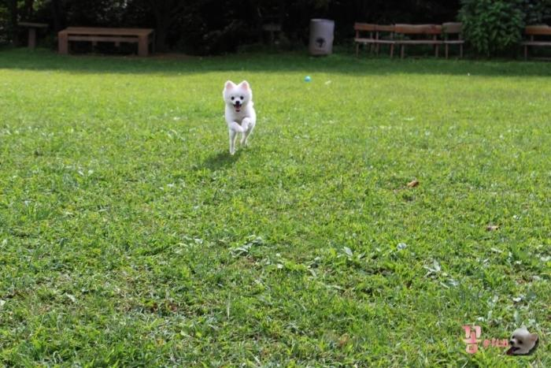
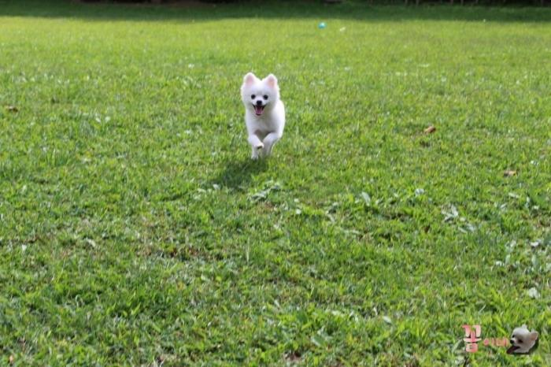
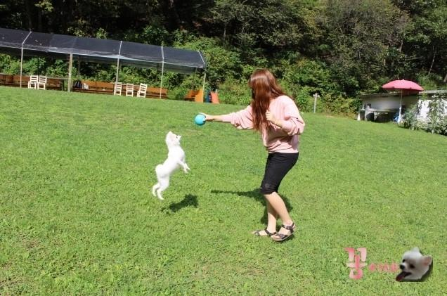
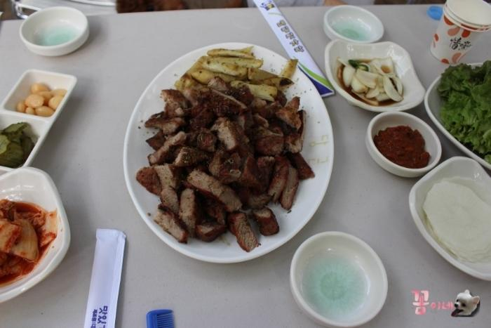
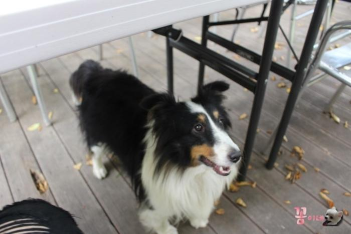
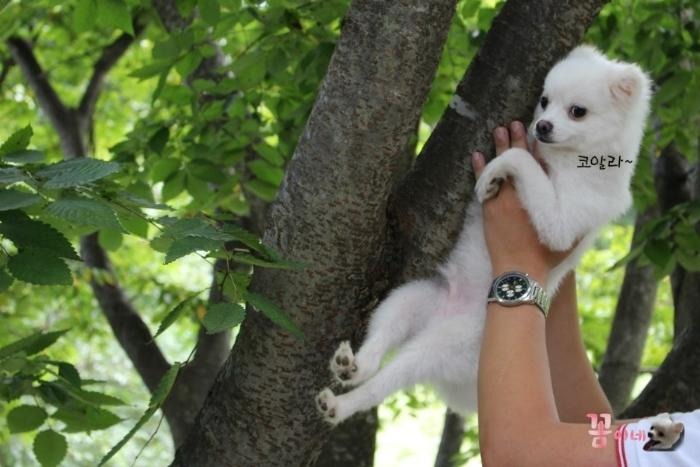
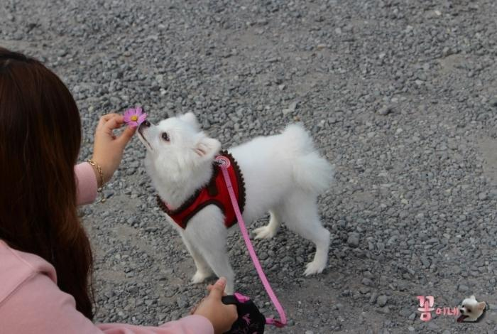

| 제목 | 영천 도기랜드 | 작성자 | 꼼 | 조회수 | 76 |
|---|---|---|---|---|---|
 대구에서 와촌ic를 타고 1시간 가량 달린끝에 도착한 도기랜드 ! 도기랜드 가는길은 완전 시골길이였어요 *_* 뱅글뱅글  아가들 입장료도 계산하고, 꼼이네는 음료를 주문했지요    그 사이에 처음밟아보는 잔디밭에서 신난꼼 ^^  엄마랑 공놀이도하구요 ~~~~ 공보니까 점프실력이 어마어마하네요 ㅎㅎㅎ  실컷놀다 배가고파진 엄마는 꼼이 생식을 따로주고~ 목살바베큐와 밥을 주문해서 먹었어요 ^^ 익혀서나오는데 불맛도 느껴지면서 ㅎㅎㅎ맛있었답니다 ~!!  밥먹고있으니 쪼로로 따라다니던..사장님?의 멍머이!  장난꾸러기 아빠덕에~ 꼼인 꼼알라가 됬어요!!ㅋㅋㅋㅋ *_* 대구에서 차로 이동하면 그리 멀지두않구, 강아지들에게는 엄청나게 좋던 도기랜드! 날이 추워지기전에 가보셔욤 ^^ 벌레가 많아서 사람은 조금 힘들수도있답니다 ! 꼼이 포함해서 멍멍이친구들 3명이서갔는데 모두 진드기에 물리지두않았어요~  |
|||||